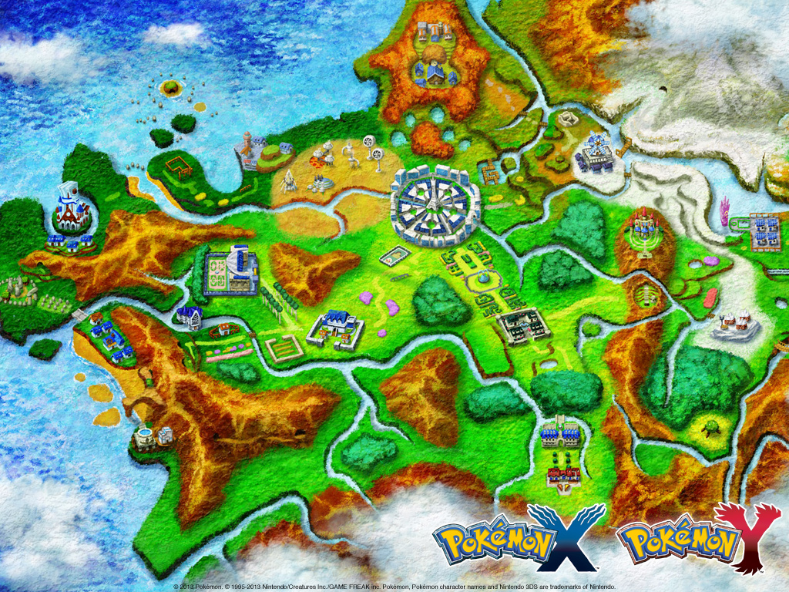
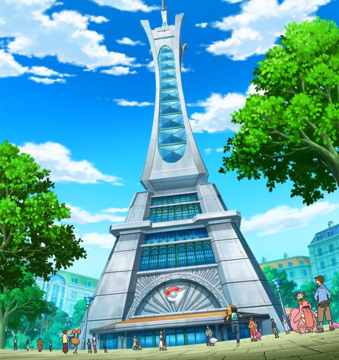
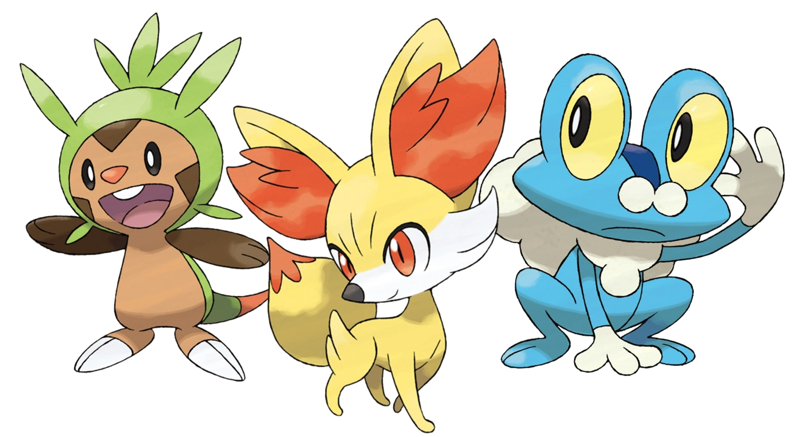
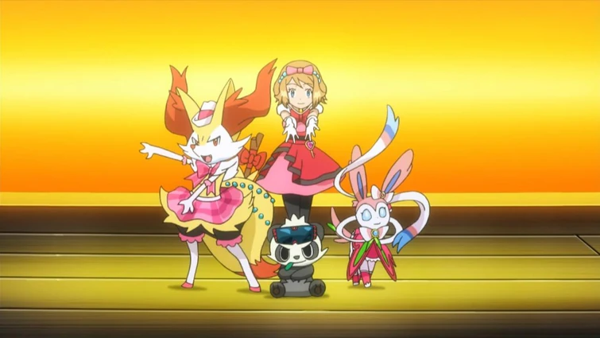
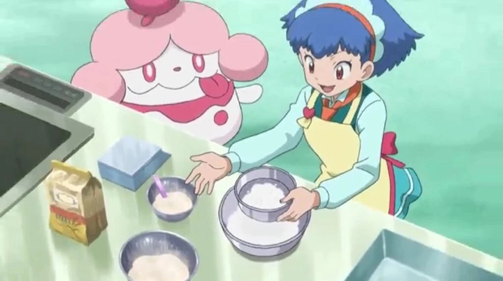
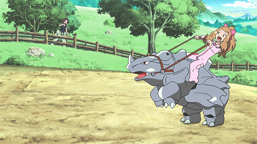
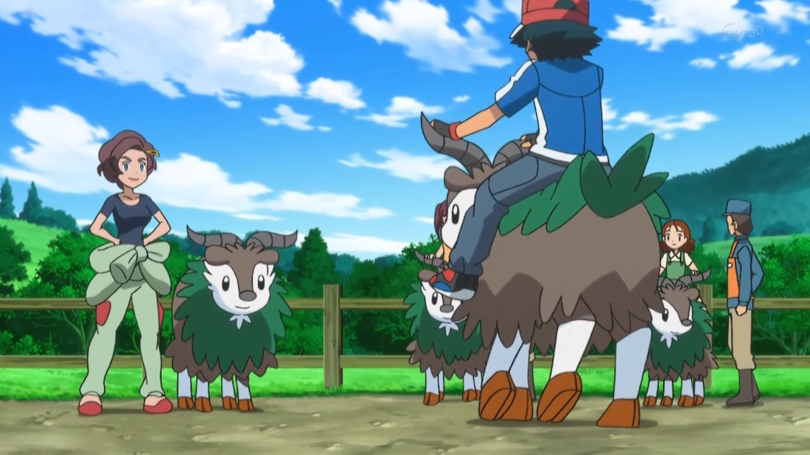

If you are looking for the ultimate getaway, the Kalos region is an unparalleled destination that feels like a living fairytale brought to life. You should visit Kalos because it seamlessly blends breathtaking natural beauty, like the coastal cliffs of Ambrette, with world-class elegance and history. Throughout your travels, you will be surrounded by some of the most adorable Pokémon in existence, including the fluffy Sylveon and the tiny, electric Dedenne that frequent the region's lush flower fields. For an easy start to your adventure, you should head straight to the metropolitan hub of Lumiose City, where the sheer variety of boutiques and cafes ensures you are well-prepared for the road ahead. Your journey officially begins when you choose between the courageous Froakie, the sturdy Chespin, or the charming Fennekin, but the excitement doesn't stop there. In the heart of the city, the esteemed Professor will meet with you at his research lab and, in a gesture of incredible generosity, offer you a second starter Pokémon from the classic Kanto trio.



Lumiose isnt the only good place to visit in Kalos!!! There are some awesome wild areas like forrests and plains. You can visit farms or climb mountains.
.
In Kalos, there are many events you could watch or take part in! There are rhyhorn races all over Kalos. If you want to learn how to ride them, you can visit a ranch where they'll let you ride skidoo! In Lumiose, you can take part in fasion contest. Some contests involve you making outfits for others, while some contests involve matching outfits with your partner Pokemon! One other popular event in Kalos is cooking competitions. These are all over the place!


.

